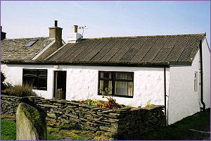

10 Easdale Island (Oban)

Price: £120,000
10 Easdale Island is situated a short walk from the ferry landing and has views over the green to the front and over the green at the rear towards the hills on the mainland.
The Island of Easdale lies some 16 miles south of Oban and approximately 35 miles from Lochgilphead and is in one of the loveliest areas off the west coast of Scotland. From the island itself there are marvellous views to the numerous other islands in the Firth of Lorn including Mull, Insh, Luing and Scarba.
The cottage forms part of a group of similar type houses originally built to house the workers engaged in slate mining, which is now of historic importance only and which is vividly recorded in the museum on the island. A particular pleasing feature of the island is the well-kept paths and grassed areas. The island enjoys a good community spirit and has a bar/restaurant and an architecturally designed village hall as well as the museum. Local amenities, including a well-respected primary school, are available on the mainland at the nearby village of Ellenabeich.
The island is reached by turning west off the A816 Oban-Lochgilphead road at Kilninver (B844), travelling to the Seil Peninsula via the famous Clachan "Bridge over the Atlantic". From there the road leads to the village of Ellenabeich from which a passenger only ferry carries passengers on the short journey across the Easdale Sound to the Island of Easdale. There are no roads on the island and a short walk leads to No. 10.
This charming cottage was originally detached and is now linked to a neighbouring property via an additional roof and wall which has created an entrance vestibule and a substantial storage cupboard for number 10. The cottage is built of stone, under a corrugated roof, with traditional thick outer walls.
The property has been extended to the rear, creating a good sized kitchen, and two additional bedrooms. The living room benefits from a lovely vaulted ceiling with exposed timber beams and a solid fuel burning stove, within a slate lined fireplace.
Number 10 has a good deal of character and offers an ideal opportunity for those wishing to enjoy an island lifestyle whilst still being easily accessible to the mainland – being equally suitable as a permanent home or as a second home/holiday retreat. |